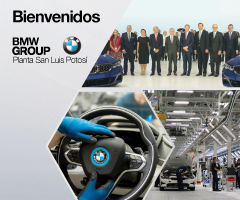

Egresados
Sistema Institucional de Seguimiento de Egresados
http://servicios.upslp.edu.mx/egresados/
Si no te has registrado, solicita tu clave en egresados@upslp.edu.mx
Bolsa de Trabajo
La UPSLP en coordinación con Trabajando.com te ofrece la Bolsa de Trabajo para que registres tu CV y tengas acceso a posiciones de trabajo nacionales.
https://www.facebook.com/vinculacion.upslp

Credencial de Egresado
Obtén tu credencial de egresado y mantente en contacto con tu universidad. Para mantener tus beneficios, solicita tu credencial en Servicios Escolares.
Contacto para citas: vinculacion@upslp.edu.mx